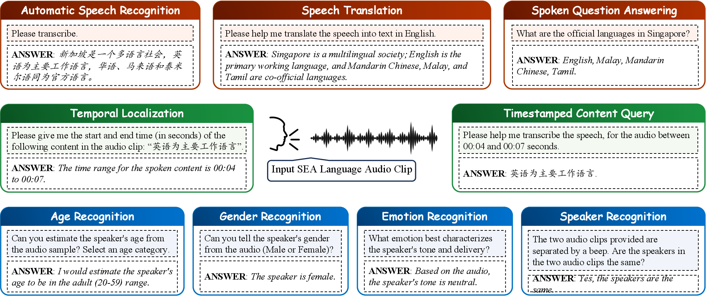
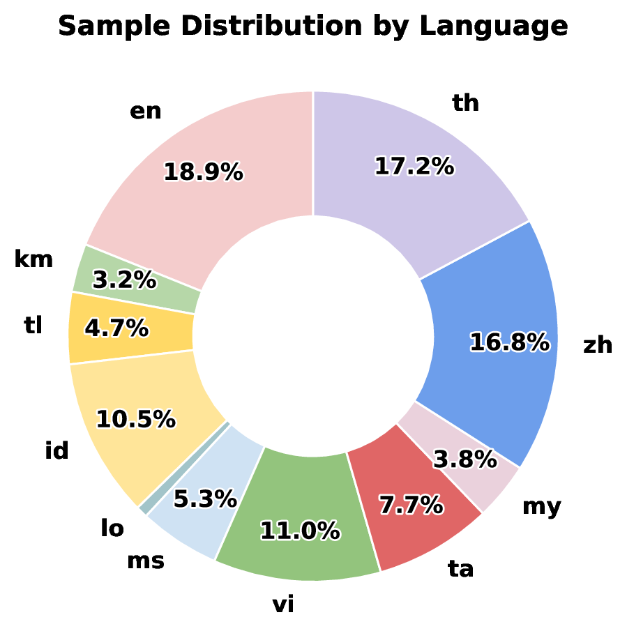
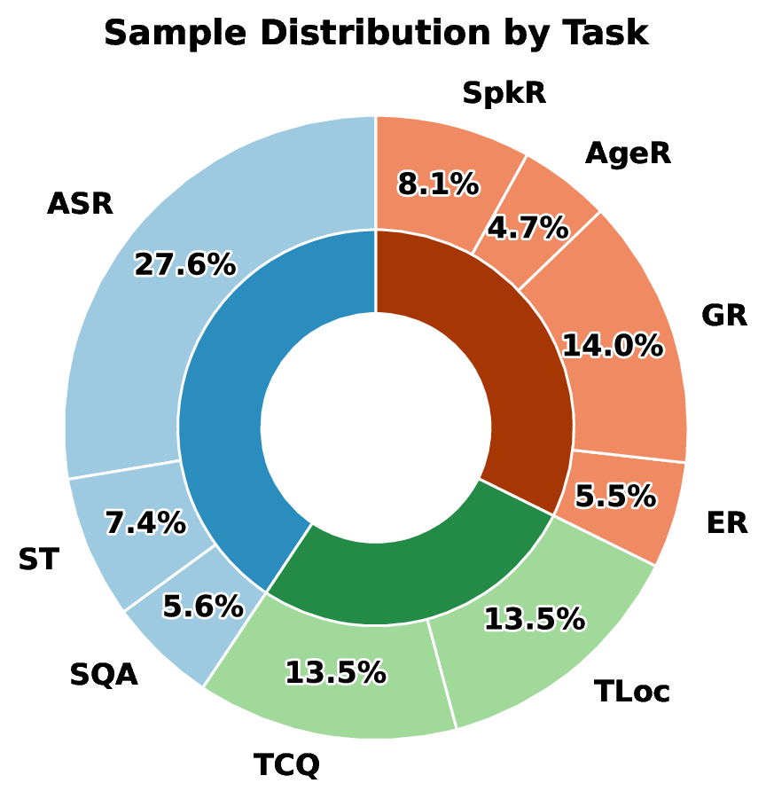
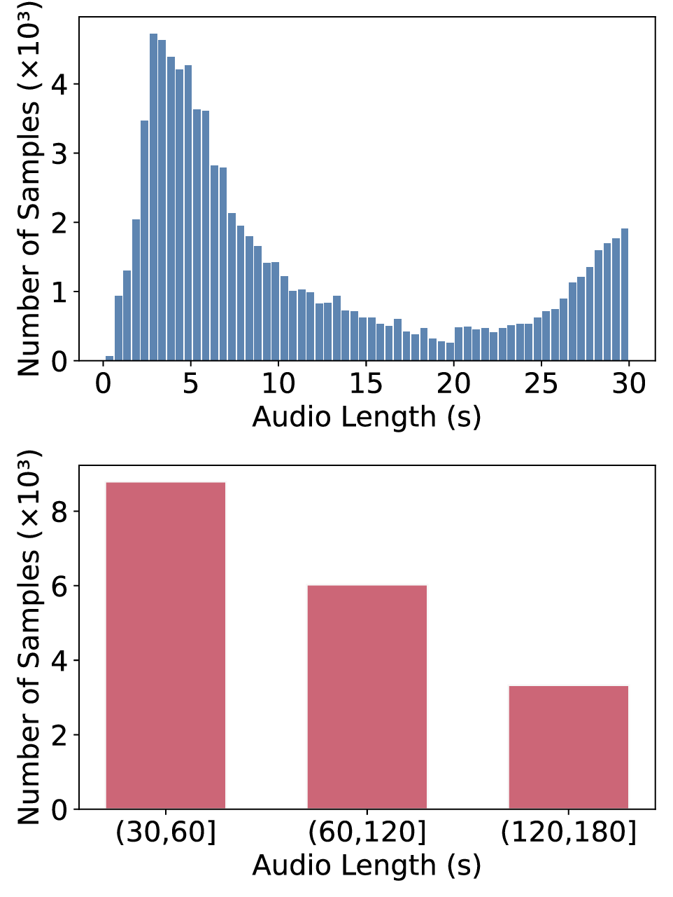

SEA-SpeechBench A Large-Scale Multitask Benchmark for Speech Understanding Across Southeast Asia
Overview
Audio and multimodal LLMs are measured almost entirely in English. Southeast Asia — over 650 million speakers, many of its languages tonal and many of them low-resource — is absent from existing audio benchmarks, and the regional speech models now appearing have no common yardstick. SEA-SpeechBench is a benchmark for speech understanding across the region.
- 11 languages. The official languages of nine Southeast Asian countries: Burmese, English, Filipino, Indonesian, Khmer, Lao, Malay, Mandarin Chinese, Tamil, Thai, Vietnamese.
- 9 tasks in 3 categories. Speech processing (ASR, ST, SQA), paralinguistics (ER, GR, AgeR, SpkR), and temporal reasoning (TCQ, TLoc).
- 97,194 samples. Across 99 evaluation sets and 597 hours of audio, curated from 23 public and community corpora.
- Bilingual prompting. Every task is evaluated with both English and native-language instructions, matching how people in the region address these systems.
- Temporal reasoning. Two new tasks treat audio as a searchable temporal space, probing both directions of the time↔content mapping over recordings up to 3 minutes.
- 16 systems evaluated. Open models from 2B to 30B parameters, a cascaded baseline evaluated on translation, and the commercial Gemini 2.5 Flash and GPT-4o.
Task suite

Speech processing and paralinguistic tasks use clips of 30 seconds or less, matching the input limits of most current models; the two temporal reasoning tasks extend to 3 minutes. All sources are unified into one format, resampled to 16 kHz mono, and sampled under a fixed seed with speaker-disjoint splits.
Composition



Sample distribution across the benchmark. Low-resource languages such as Khmer, Lao and Burmese are deliberately included to cover the region's full linguistic spectrum. Short clips concentrate around sentence length; the temporal tasks add stratified long-form bins of 30–60s, 60–120s and 120–180s.
Results
All nine tasks are evaluated under both English and native-language prompts. Tables that break results down by language or by audio duration show the English-prompt condition, to keep them readable; the remaining tables report both. Per-dataset results under both conditions are in the paper's appendix.
Automatic Speech Recognition
English promptsAveraged by language. Raw WER/CER (0.07 = 7%); lower is better.
| Model | Size | en | tl | vi | id | ta | th | zh | km | lo | ms | my | Avg. |
|---|---|---|---|---|---|---|---|---|---|---|---|---|---|
| Gemma-3n-it | 2B | 1.32 | 0.42 | 3.77 | 0.17 | 1.20 | 3.03 | 1.55 | 3.92 | 1.42 | 1.06 | 2.81 | 1.88 |
| Qwen2.5-Omni | 3B | 0.07 | 0.60 | 0.27 | 0.15 | 1.36 | 0.12 | 0.05 | 2.97 | 1.39 | 0.23 | 2.01 | 0.84 |
| MERaLiON-2 | 3B | 0.07 | 0.20 | 0.35 | 0.11 | 0.43 | 0.08 | 0.11 | 1.72 | 0.86 | 0.17 | 1.19 | 0.48 |
| Voxtral | 3B | 0.21 | 2.40 | 0.93 | 0.36 | 1.20 | 0.57 | 0.45 | 1.72 | 1.29 | 0.76 | 5.05 | 1.36 |
| Gemma-3n-it | 4B | 0.76 | 0.24 | 2.71 | 0.51 | 0.45 | 0.32 | 0.69 | 1.71 | 0.15 | 1.98 | 2.98 | 1.14 |
| SeaLLMs-Audio | 7B | 0.38 | 1.03 | 0.44 | 0.28 | 1.52 | 0.05 | 0.34 | 1.07 | 1.01 | 0.61 | 1.20 | 0.72 |
| Phi-4-multimodal | 5.6B | 0.09 | 5.10 | 2.92 | 2.76 | 1.93 | 2.98 | 0.10 | 3.11 | 2.45 | 3.15 | 2.13 | 2.43 |
| Qwen2-Audio-it | 7B | 0.14 | 1.88 | 1.03 | 0.74 | 1.48 | 1.21 | 0.21 | 1.08 | 1.08 | 1.02 | 1.17 | 1.00 |
| Qwen2.5-Omni | 7B | 0.07 | 0.55 | 0.25 | 0.10 | 1.34 | 0.54 | 0.05 | 3.08 | 2.63 | 0.50 | 5.49 | 1.33 |
| Kimi-Audio | 7B | 0.25 | 3.42 | 15.86 | 0.58 | 4.46 | 2.60 | 0.05 | 5.27 | 4.52 | 5.92 | 7.99 | 4.63 |
| MERaLiON-2 | 10B | 0.07 | 0.18 | 0.23 | 0.09 | 0.38 | 0.10 | 0.09 | 0.77 | 0.39 | 0.13 | 0.83 | 0.30 |
| Qwen3-Omni-Thinking | 30B | 0.11 | 0.51 | 0.20 | 0.06 | 0.86 | 0.04 | 0.13 | 5.71 | 1.06 | 0.29 | 7.21 | 1.47 |
| Qwen3-Omni-it | 30B | 0.09 | 0.42 | 0.19 | 0.05 | 0.44 | 0.03 | 0.06 | 1.78 | 0.49 | 0.29 | 2.27 | 0.56 |
| Gemini 2.5 Flash | — | 0.11 | 0.13 | 0.12 | 0.03 | 0.27 | 0.05 | 0.18 | 0.13 | 0.16 | 0.11 | 0.31 | 0.15 |
| GPT-4o | — | 0.13 | 0.14 | 0.21 | 0.05 | 0.41 | 0.06 | 0.09 | 0.30 | 0.38 | 0.17 | 0.66 | 0.24 |
Bold — best within group. Coloured — best overall. Commercial systems: Gemini 2.5 Flash, GPT-4o. Click a column heading to sort.
Speech Translation & Spoken QA
English and native promptsTranslation scored with BLEU and chrF; spoken QA with a scaled GPT-4.1 judge score. Higher is better.
| Model | Size | ST · BLEU | ST · chrF | SQA | |||
|---|---|---|---|---|---|---|---|
| ENG | SEA | ENG | SEA | ENG | SEA | ||
| Gemma-3n-it | 2B | 8.97 | 8.72 | 30.98 | 30.76 | 73.35 | 56.06 |
| Qwen2.5-Omni | 3B | 7.60 | 6.27 | 33.00 | 28.46 | 78.42 | 73.14 |
| MERaLiON-2 | 3B | 7.56 | 7.42 | 28.36 | 29.22 | 66.68 | 60.19 |
| Voxtral | 3B | 19.98 | 18.15 | 43.52 | 36.86 | 82.32 | 79.06 |
| Gemma-3n-it | 4B | 10.98 | 13.58 | 33.14 | 39.87 | 79.24 | 78.89 |
| Phi-4-multimodal | 5.6B | 3.04 | 0.32 | 17.10 | 4.87 | 64.69 | 47.36 |
| SeaLLMs-Audio | 7B | 10.74 | 10.11 | 32.44 | 28.40 | 76.42 | 78.38 |
| Qwen2-Audio-it | 7B | 4.54 | 3.20 | 23.37 | 19.46 | 65.82 | 57.95 |
| Qwen2.5-Omni | 7B | 7.91 | 8.06 | 35.87 | 35.35 | 71.60 | 75.57 |
| Kimi-Audio | 7B | 3.36 | 7.71 | 18.02 | 24.35 | 69.62 | 63.49 |
| MERaLiON-2 | 10B | 17.75 | 19.52 | 42.97 | 45.56 | 82.00 | 82.05 |
| Qwen3-Omni-Thinking | 30B | 12.97 | 11.95 | 37.70 | 37.59 | 84.93 | 85.28 |
| Qwen3-Omni-it | 30B | 15.28 | 13.55 | 41.56 | 39.66 | 85.77 | 85.62 |
| Whisper + Qwen3.6 (cascade) | — | 20.83 | 20.96 | 44.87 | 47.29 | — | — |
| Gemini 2.5 Flash | — | 16.86 | 18.89 | 45.13 | 53.94 | 92.28 | 86.21 |
| GPT-4o | — | 21.24 | 21.39 | 48.30 | 48.36 | 86.66 | 82.44 |
Bold — best within group. Coloured — best overall. SQA is a scaled GPT-4.1 judge score. Click a column heading to sort.
Paralinguistic tasks
English and native promptsAge, gender and speaker recognition scored by macro-F1; emotion recognition by judge accuracy. Higher is better.
| Model | Size | AgeR | ER | GR | SpkR | ||||
|---|---|---|---|---|---|---|---|---|---|
| ENG | SEA | ENG | SEA | ENG | SEA | ENG | SEA | ||
| Gemma-3n-it | 2B | 26.82 | 22.70 | 12.21 | 13.17 | 11.49 | 10.05 | 37.16 | 32.07 |
| Qwen2.5-Omni | 3B | 29.78 | 24.75 | 13.45 | 9.95 | 49.85 | 37.30 | 25.22 | 31.47 |
| MERaLiON-2 | 3B | 33.14 | 28.16 | 23.99 | 18.73 | 41.44 | 36.48 | 43.45 | 29.91 |
| Voxtral | 3B | 37.26 | 28.49 | 10.62 | 5.35 | 39.78 | 20.41 | 42.84 | 38.67 |
| Gemma-3n-it | 4B | 32.41 | 29.97 | 12.46 | 13.93 | 35.41 | 23.54 | 33.01 | 34.13 |
| Phi-4-multimodal | 5.6B | 26.28 | 28.42 | 20.87 | 9.20 | 49.36 | 31.06 | 36.43 | 32.73 |
| SeaLLMs-Audio | 7B | 29.77 | 18.08 | 12.34 | 9.17 | 37.07 | 32.77 | 43.50 | 31.05 |
| Qwen2-Audio-it | 7B | 17.23 | 15.39 | 24.47 | 19.36 | 91.89 | 66.24 | 41.93 | 31.66 |
| Qwen2.5-Omni | 7B | 15.23 | 18.28 | 16.33 | 10.45 | 65.03 | 49.17 | 15.55 | 18.61 |
| Kimi-Audio | 7B | 35.42 | 34.09 | 36.86 | 42.55 | 92.73 | 71.36 | 46.58 | 29.61 |
| MERaLiON-2 | 10B | 32.99 | 32.46 | 18.73 | 20.34 | 57.50 | 45.93 | 48.36 | 37.07 |
| Qwen3-Omni-Thinking | 30B | 38.10 | 36.78 | 15.06 | 10.34 | 94.77 | 69.34 | 52.35 | 43.29 |
| Qwen3-Omni-it | 30B | 39.56 | 36.70 | 15.94 | 11.31 | 95.78 | 65.43 | 56.15 | 44.28 |
| Gemini 2.5 Flash | — | 36.93 | 36.33 | 19.50 | 16.79 | 92.54 | 82.54 | 58.01 | 51.54 |
| GPT-4o | — | 36.91 | 34.27 | 17.00 | 19.50 | 59.40 | 46.78 | 14.49 | 19.04 |
Bold — best within group. Coloured — best overall. AgeR/GR/SpkR: macro-F1; ER: judge accuracy. Click a column heading to sort.
Temporal reasoning
English promptsStratified by audio duration. TCQ is WER/CER in percent (lower is better); TLoc is span-overlap F1 (higher is better). A dash means the model cannot process audio of that length.
| Model | Size | TCQ · WER/CER % | TLoc · F1 | ||||||
|---|---|---|---|---|---|---|---|---|---|
| 0–30s | 30–60s | 60–120s | 120–180s | 0–30s | 30–60s | 60–120s | 120–180s | ||
| SeaLLMs-Audio | 7B | 5.48 | — | — | — | 11.57 | — | — | — |
| Qwen2-Audio-it | 7B | 5.56 | — | — | — | 33.30 | — | — | — |
| Qwen2.5-Omni | 3B | 8.74 | 9.20 | — | — | 30.49 | 18.21 | — | — |
| Gemma-3n-it | 2B | 7.32 | 7.49 | — | — | 11.82 | 8.27 | — | — |
| Gemma-3n-it | 4B | 6.76 | 7.38 | — | — | 13.25 | 8.72 | — | — |
| Phi-4-multimodal | 5.6B | 20.67 | 14.90 | 16.25 | — | 12.97 | 6.25 | 3.64 | — |
| MERaLiON-2 | 3B | 4.77 | 8.21 | 11.27 | — | 18.82 | 10.28 | 5.14 | — |
| Qwen2.5-Omni | 7B | 5.49 | 6.58 | 9.85 | — | 35.74 | 19.98 | 11.32 | — |
| Kimi-Audio | 7B | 14.00 | 19.07 | 24.04 | 42.78 | 14.49 | 8.61 | 3.70 | 3.00 |
| Voxtral | 3B | 4.74 | 7.74 | 12.86 | 22.13 | 17.85 | 9.87 | 3.71 | 2.45 |
| MERaLiON-2 | 10B | 5.12 | 9.48 | 14.72 | 17.67 | 22.22 | 12.37 | 6.40 | 4.53 |
| Qwen3-Omni-Thinking | 30B | 1.28 | 1.35 | 2.17 | 3.12 | 10.80 | 5.76 | 2.32 | 1.96 |
| Qwen3-Omni-it | 30B | 1.18 | 1.22 | 1.34 | 1.86 | 11.40 | 5.90 | 2.43 | 1.28 |
| Gemini 2.5 Flash | — | 2.41 | 2.64 | 9.44 | 4.09 | 11.66 | 7.70 | 5.57 | 5.30 |
| GPT-4o | — | 5.06 | 6.82 | 7.38 | 8.59 | 26.47 | 17.83 | 8.53 | 5.38 |
Bold — best within group. Coloured — best overall. Commercial systems: Gemini 2.5 Flash, GPT-4o. Click a column heading to sort.
Key findings
- Temporal reasoning degrades sharply with audio duration. The best temporal localization score achieved by any system falls from 35.74 F1 on 0–30s clips to 5.38 on 120–180s clips. Predicted spans also skew wide: recall exceeds precision at every duration and in nearly every system, though both remain low.
- Prompt language produces systematic disparities. Aggregated across tasks, instructing a model in native language rather than in English costs almost nothing in performance for Chinese and Indonesian, a moderate amount for Filipino, Vietnamese, Malay, Lao and Thai, and a large amount for Burmese, Tamil and Khmer. A text-only control shows that MERaLiON-2-3B translates tested native prompts correctly, yet still scores up to 15.23 points higher under English prompts on age recognition. The deficit is therefore in cross-modal instruction following rather than language understanding.
- Emotion recognition and speech translation remain below usable accuracy. The highest emotion recognition score is 42.55 (Kimi-Audio, native prompts); no other system exceeds 25 under either prompt condition. Speech translation peaks at 21.39 BLEU (GPT-4o) and 53.94 chrF (Gemini 2.5 Flash), with the strongest open-weight result a Whisper + Qwen3.6 cascade at 20.96 BLEU.
- Refusal is a distinct failure mode from error. GPT-4o scores 14.49 macro-F1 on speaker recognition, but the breakdown shows abstentions rather than wrong predictions: it declines 89.5% of queries and is correct on 100% of the 10.5% it answers. Qwen2.5-Omni-7B scores comparably low (15.55 under English prompts, 18.61 under native prompts) and also refuses frequently, but unlike GPT-4o it makes substantive errors on the queries it does accept.
Citation
@inproceedings{liao2026seaspeechbench,
title = {{SEA-SpeechBench}: A Large-Scale Multitask Benchmark for Speech Understanding Across Southeast Asia},
author = {Liao, Jingyi and Zhang, Wenyu and Liu, Zhuohan and He, Yingxu and Lin, Geyu and
Zou, Xunlong and Sun, Shuo and Alsagoff, Syed Ali Redha and Aw, Ai Ti},
booktitle = {Proceedings of the 2026 Conference on Empirical Methods in Natural Language Processing (EMNLP)},
year = {2026}
}